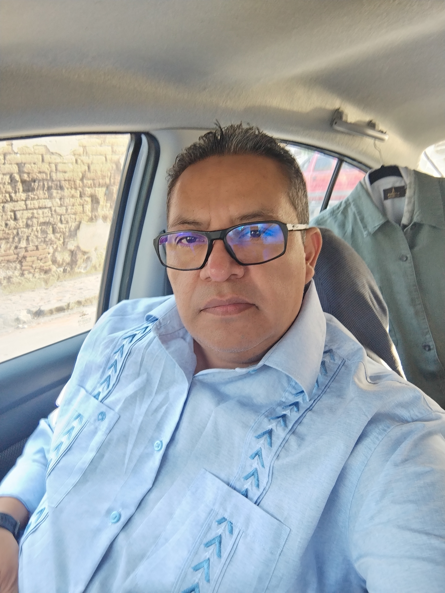
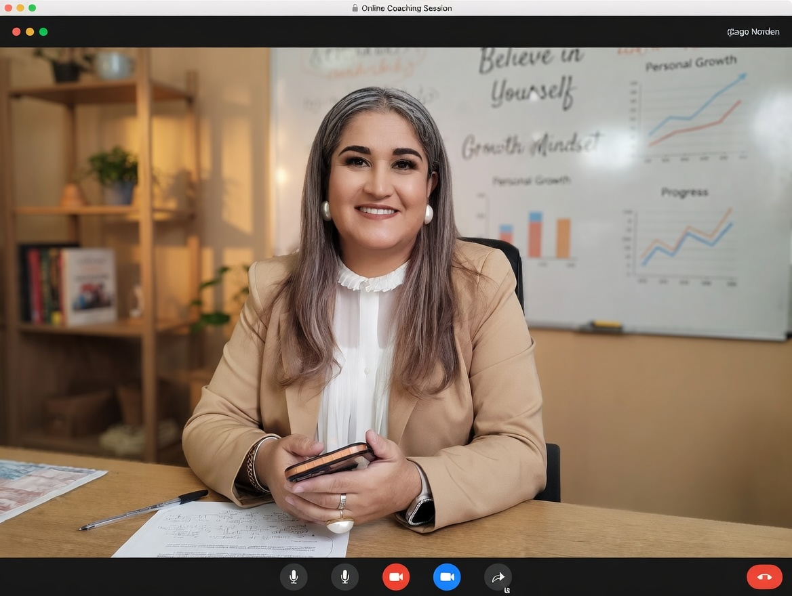

Un viaje de 7 semanas diseñado para transformar tu resiliencia en resultados operativos. De la incertidumbre a la estructuración de un plan de negocio real.
Ocho módulos estratégicos que te llevarán de la mano desde el autoconocimiento hasta la puesta en marcha de tu emprendimiento.
Evaluación profunda de tu estado emocional actual. Identificación de los bloqueos mentales que frenan tu capacidad de decisión en momentos de incertidumbre.
Herramientas tácticas para procesar las pérdidas (financieras, de estatus o personales) y transformarlas en activos de aprendizaje corporativo.
Diseño de tu "Ecosistema de Soporte". Aprenderás a identificar mentores, socios y redes de confianza para no caminar solo en el proceso.
Cómo encontrar una brújula en medio del desierto. Alineación de tus valores personales con una oferta de mercado real y necesaria.
Entrenamiento mental para el alto impacto. Manejo de la crítica, el rechazo y la volatilidad económica sin perder el enfoque operativo.
Apertura del radar empresarial. Identificación de nichos desatendidos y problemas sin resolver que pueden convertirse en fuentes de ingresos.
Del papel a la realidad. Estructuración mínima viable de tu propuesta y validación rápida con herramientas de bajo costo.
Consolidación de tu ruta. Saldrás con un documento guía que integra tu bienestar emocional con tus proyecciones de crecimiento financiero.

Especialista en desarrollo humano con enfoque en resiliencia espiritual y financiera. Creador de la metodología "Resistencia del Asedio" y autor del bestseller que da origen a este programa.

Consultora senior en expansión de franquicias y diseño de modelos de negocio rentables. Experta en aterrizar la inteligencia emocional en indicadores de facturación y escalabilidad.
Al inscribirte, no solo obtienes conocimiento, sino el derecho de participar activamente en el desarrollo de los proyectos productivos de la comunidad.